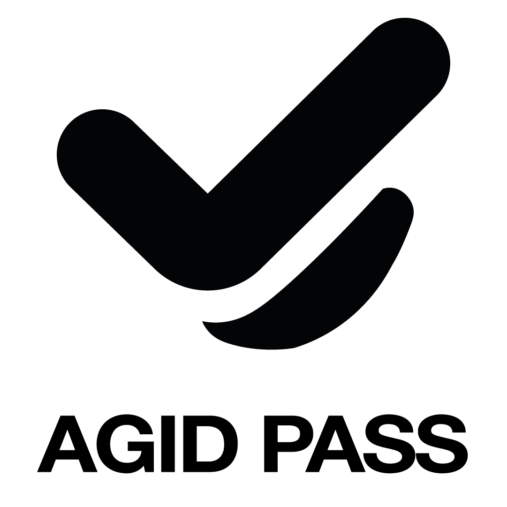
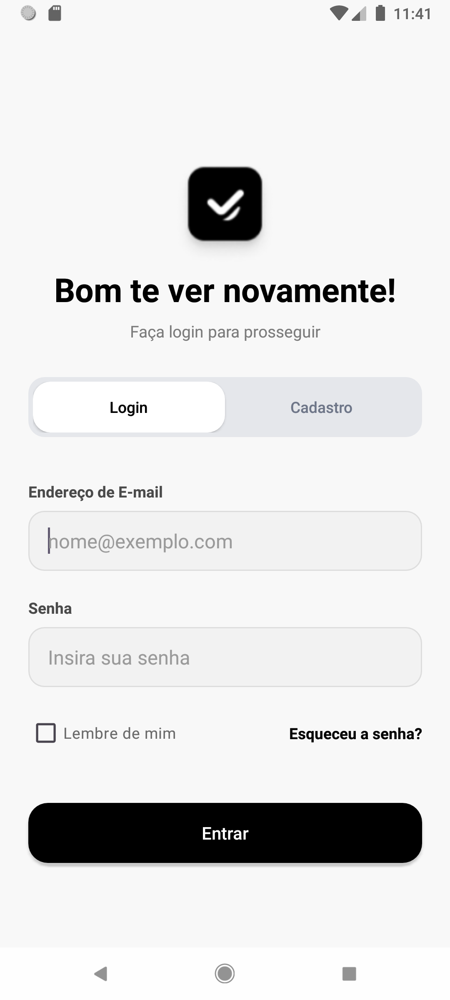
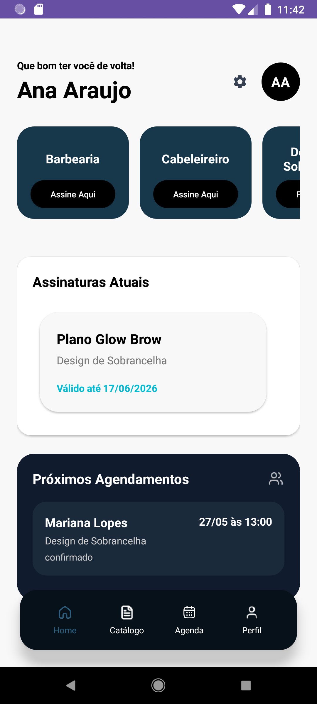
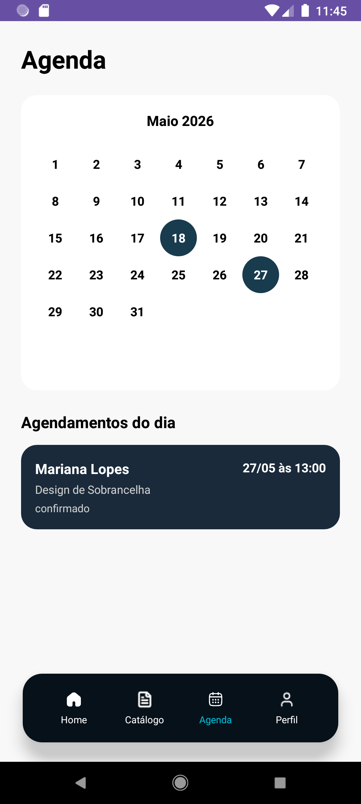
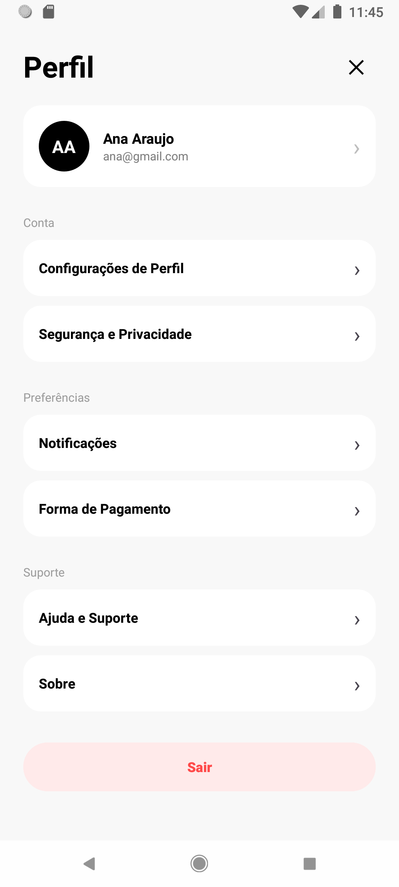

O AGID PASS conecta clientes e profissionais de beleza e bem-estar em uma única plataforma.
Pelo site, você pode conhecer o projeto, acessar links importantes e realizar um cadastro inicial.
A experiência completa acontece no aplicativo mobile.
O AGID PASS é uma plataforma de agendamento de serviços de beleza e bem-estar, desenvolvida para facilitar a conexão entre clientes e profissionais. A proposta é centralizar a busca por serviços, organização de agenda e suporte ao usuário.
Encontre profissionais, consulte serviços e acompanhe seus agendamentos pelo aplicativo.
Divulgue seus serviços, organize sua agenda e aumente sua visibilidade.
Use esta página para conhecer o projeto, acessar links e iniciar seu cadastro.
Use a landing page para entender a proposta, os serviços e as tecnologias do AGID PASS.
O usuário pode realizar um cadastro inicial como cliente ou profissional.
A navegação completa, catálogo, perfil e agendamentos são pensados para o aplicativo mobile.
A plataforma contempla diferentes categorias de autocuidado e beleza.
Evita que o usuário precise acessar vários sites ou aplicativos diferentes.
Apoia pequenos empreendedores e profissionais autônomos da área da beleza.
O aplicativo concentra catálogo, perfil, agenda, configurações e suporte.
O AgidBot é o assistente virtual do AGID PASS. Ele auxilia os usuários com dúvidas sobre serviços, agendamentos, filtros e navegação na plataforma.
Testar chatbotO AGID PASS contribui para inovação, crescimento econômico e redução de desigualdades, oferecendo mais visibilidade a profissionais e pequenos empreendedores.
Trabalho decente e crescimento econômico.
Indústria, inovação e infraestrutura.
Redução das desigualdades.
Assim como plataformas que possuem versão web e mobile, o AGID PASS utiliza o site como ponto de apresentação e acesso inicial. Para uma experiência completa, com catálogo, agenda, detalhes dos profissionais e suporte integrado, utilize o aplicativo mobile.
O AGID PASS foi desenvolvido para proporcionar uma experiência intuitiva tanto para clientes quanto para profissionais.




Projeto desenvolvido por alunos do 5º semestre de Análise e Desenvolvimento de Sistemas da FACENS: Ana Luiza Nogueira de Araujo, Diogo Samuel Ribeiro dos Santos, Giulia Camizão Rokicki e Isabela de Oliveira Jacob.
Acesse os principais artefatos desenvolvidos durante o projeto.